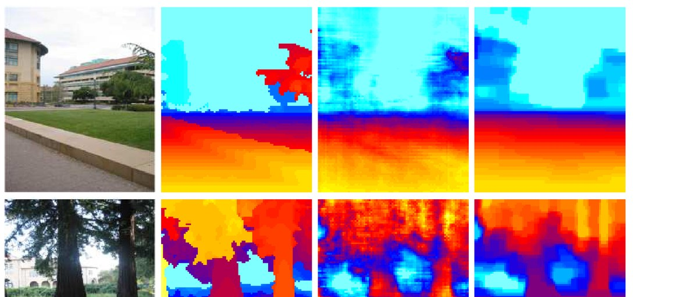
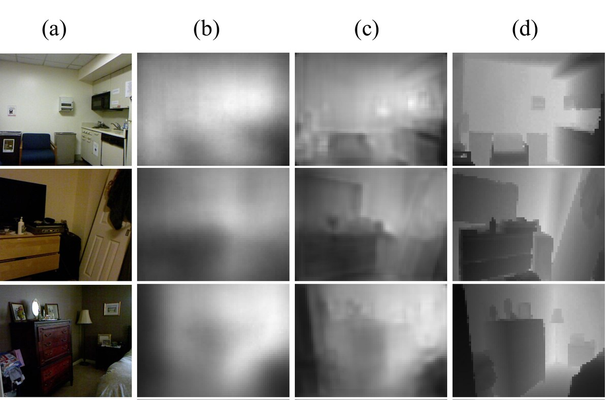
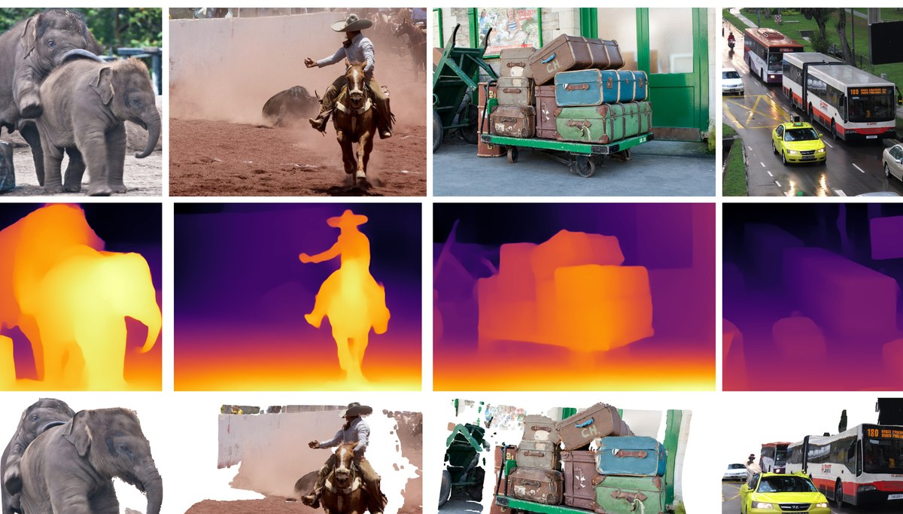
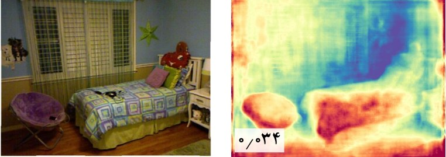
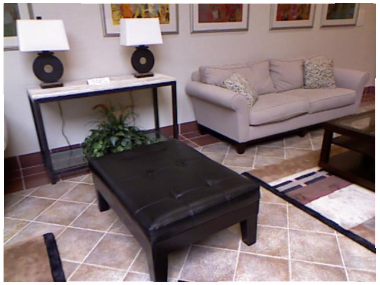

دانشگاه خواجه نصیرالدین طوسیدانشکده مهندسی کامپیوترگروه هوش مصنوعی
جلسه دفاع از پایاننامه کارشناسی ارشد
تخمین عمق بدون نظارت با استفاده از پارامترهای کالیبراسیون داخلی به عنوان ورودی
- نگارش
- محمدامین قاسمزاده
- استاد راهنما
- دکتر بهروز نصیحتکن
- داوران
- دکتر حمید ابریشمی مقدم (داور داخلی)
دکتر محمدحسین رهبان (داور خارجی)
پاییز ۱۴۰۵
اهمیت عمق مطلق در تخمین تکدوربینه


عمق نسبیکدامیک نزدیکتر است؟
عمق مطلقچند متر فاصله دارد؟
سیر تحول روشها (۱): از هندسه ساده تا یادگیری خودنظارتی

2005
دوران آغازین: هندسه و برچسبهای ساده
Automatic Photo Pop-up

2005 – 2009
ورود یادگیری ماشین
Make3D

2014
یادگیری عمیق نظارتشده
Eigen et al.

2016 – 2019
دوران استریو و خودنظارتی
Monodepth, SfMLearner, Monodepth2
سیر تحول روشها (۲): از عمق نسبی تا پژوهش حاضر

2019 – 2021
عمق نسبی و آموزش چندمجموعهای
MiDaS, DPT

2024
مدلهای بنیادین
Depth Anything, Depth Anything V2

2019 – 2025
ورود دوربین و عمق مطلق
CAM-Convs, Metric3D, UniDepth, Depth Pro

پاییز ۱۴۰۵
این پژوهش: دوربین معلوم در مدل بنیادین
Depth Anything V2 + K
مدل پایه: Depth Anything V2

تصویر
انکودر DINOv2ViT-S / B / L / G
دیکودر DPT
عمق نسبی
عمق مطلق
۵۹۵ هزارتصاویر مصنوعی برای معلم
۶۲ میلیونتصاویر واقعی شبهبرچسبخورده
۲۵ میلیون تا ۱٫۳ میلیاردپارامترها، از کوچکترین تا بزرگترین
بدون ورودی هندسه دوربین
ورودی تصویر و ماتریس کالیبراسیون دوربین
مدل پیشنهادی
مدل پایه: فقط تصویر
مدل پیشنهادی: تصویر همراه K
مجموعهدادهها و دوربینهای آنها
| مجموعهداده | صحنه | میدان دید افقی | تصاویر آموزش | تصاویر آزمون |
|---|---|---|---|---|
| مجموعههای آموزش | ||||
| NYUv2 | واقعی، داخلی | 63° | 636 | 654 |
| KITTI | واقعی، جادهای | 82° | 9,148 | 652 |
| Virtual KITTI 2 | مصنوعی، جادهای | 81° | 37,860 | — |
| Cityscapes | واقعی، شهری | 49° | 2,852 | 500 |
| دیدهنشده در آموزش | ||||
| SUN RGB-D · Kinect v1 | واقعی، داخلی | 57° | — | 200 |
| SUN RGB-D · Kinect v2 | واقعی، داخلی | 69° | — | 200 |
| SUN RGB-D · RealSense | واقعی، داخلی | 52° | — | 200 |
| SUN RGB-D · Xtion | واقعی، داخلی | 55° | — | 200 |
| DIODE | واقعی، بیرونی | 60° | — | 446 |
| مجموع | 50,496 | 3,052 | ||
هشت مجموعه آزمون، ۳۰۵۲ تصویر



از توجه شما سپاسگزارم
پرسش و پاسخ
محمدامین قاسمزاده